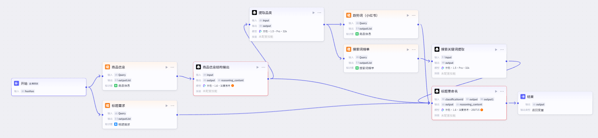
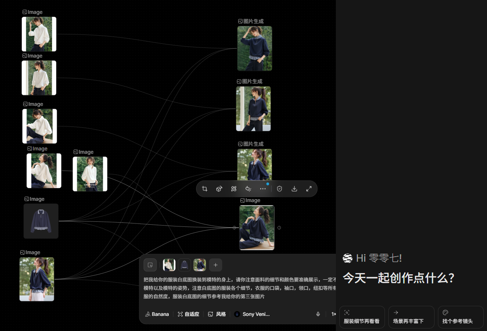
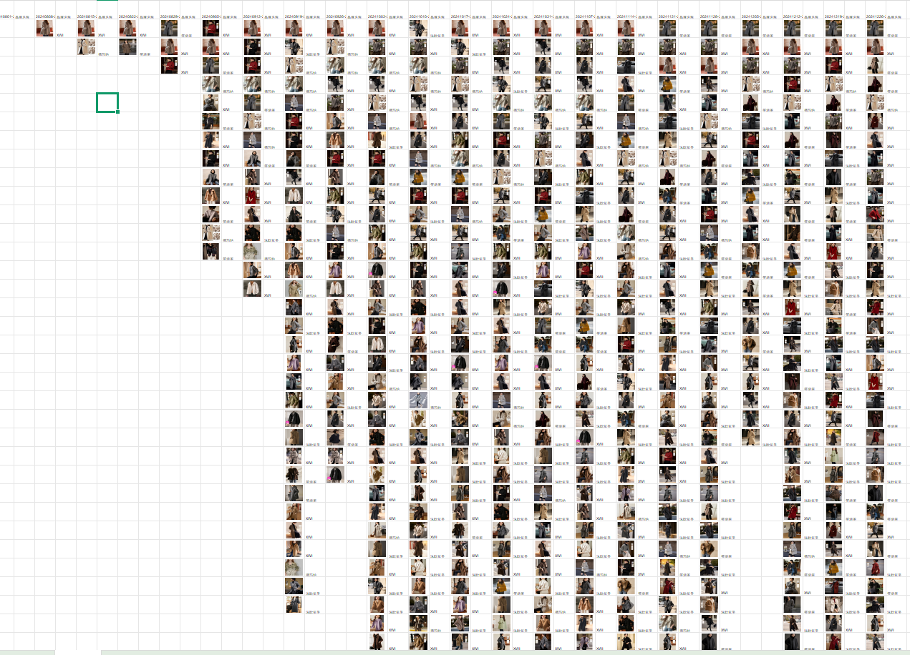

01 / 电商内容自动化
从商品信息到标题与种草文案的自动化生产
通过飞书协作表、工作流和模型接口，将商品信息、平台高搜索词与小红书趋势串联起来，批量生成并优化标题与种草文案。
内容生成流程
标题优化与种草文案自动化
围绕品类高搜索词优化标题，同时避免为了堆砌关键词而加入不相关的面料或功能词；再以爆款对标内容为参考，生成更具体的穿搭文案。
飞书协作表工作流平台高搜索词小红书趋势
自动化工作流示意商品信息输入

标题优化基于品类高搜索词
文案生成参考爆款对标风格
批量处理支持多图与多套搭配
业务问题
电商内容生产需要兼顾平台搜索趋势与商品卖点，人工逐条撰写标题和种草文案耗时，也难以保持表达一致性。
产品方案
以商品信息为输入，接入趋势与高搜索词数据，通过工作流调用模型生成标题和文案；通过提示词约束内容质量与穿搭细节。
02 / 商品视觉生成
以图像模型辅助商品视觉生成与爆款视觉替换
针对电商设计需求，将飞书对接图像模型接口，根据原始商品图生成设计线稿；结合商品参考图与大货图，以可控的场景、姿势、模特和风格替换滞销款视觉表现。

03 / 数据分析与流程自动化
从商品图数据分析到重复操作自动化
以时间维度观察竞品主图色系变化，通过人工智能提取并分析商品图信息。未来可结合点击、转化、生命周期、气温等数据建立预测模型，辅助判断销量与走势；同时用影刀机器人流程自动化承接固定、重复的操作，并利用表格宏代码批量处理数据。

04 / 关于我
好奇问题，也尊重答案。
我关注人工智能应用、用户体验和从 0 到 1 的产品过程。我的工作方式是先理解问题，再快速验证方案，最后用结果说话。
保持联系
聊聊人工智能产品的可能性
如果你正在寻找一位愿意深入问题、快速行动的产品经理，欢迎联系我：2878201147@qq.com